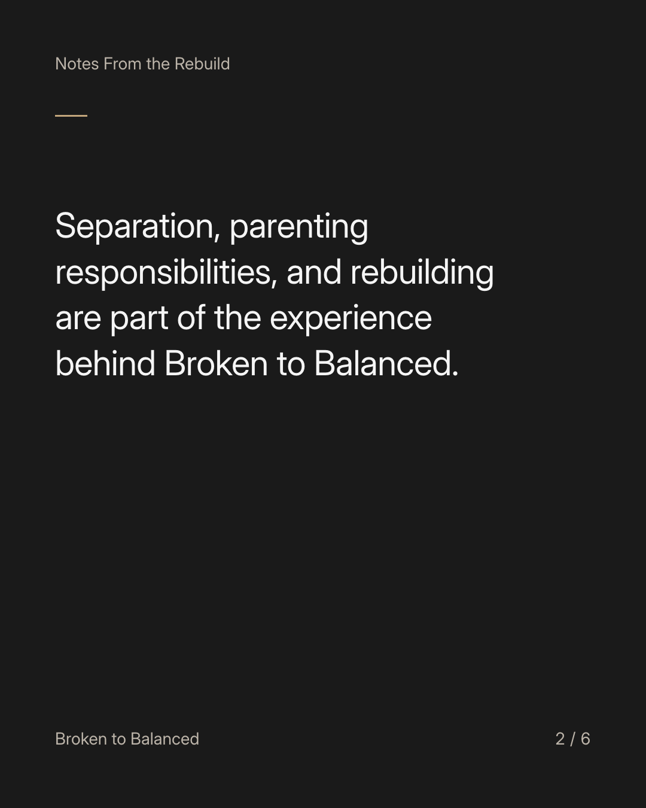
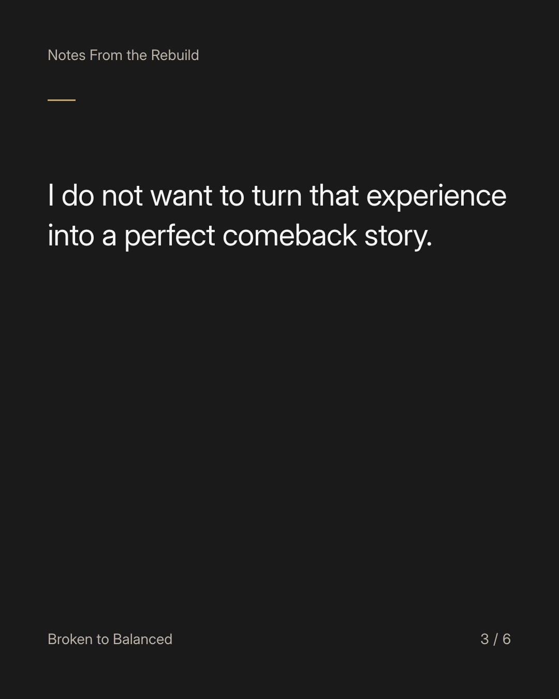
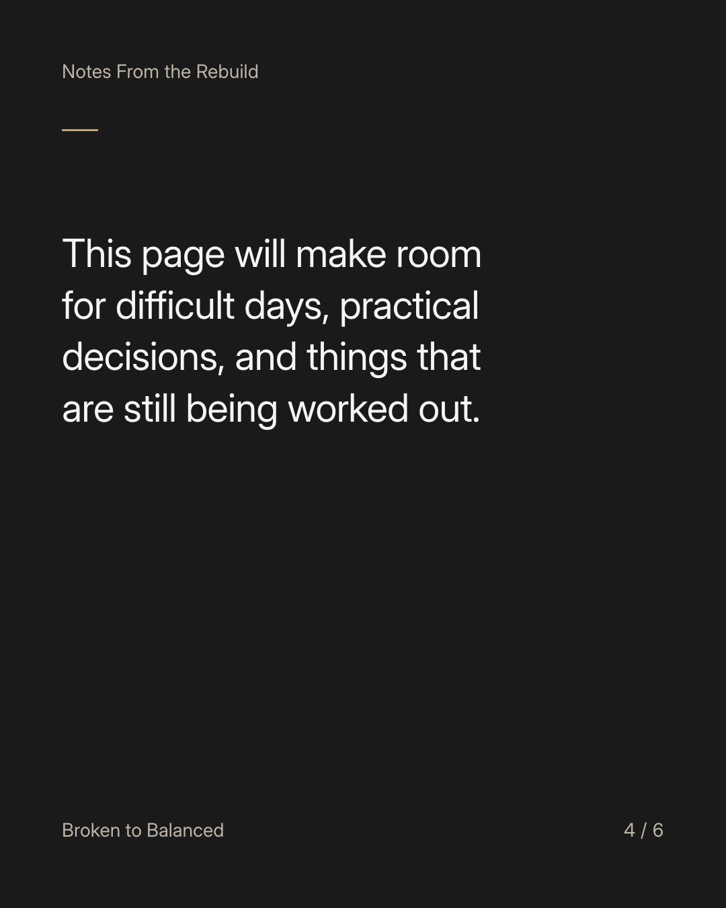
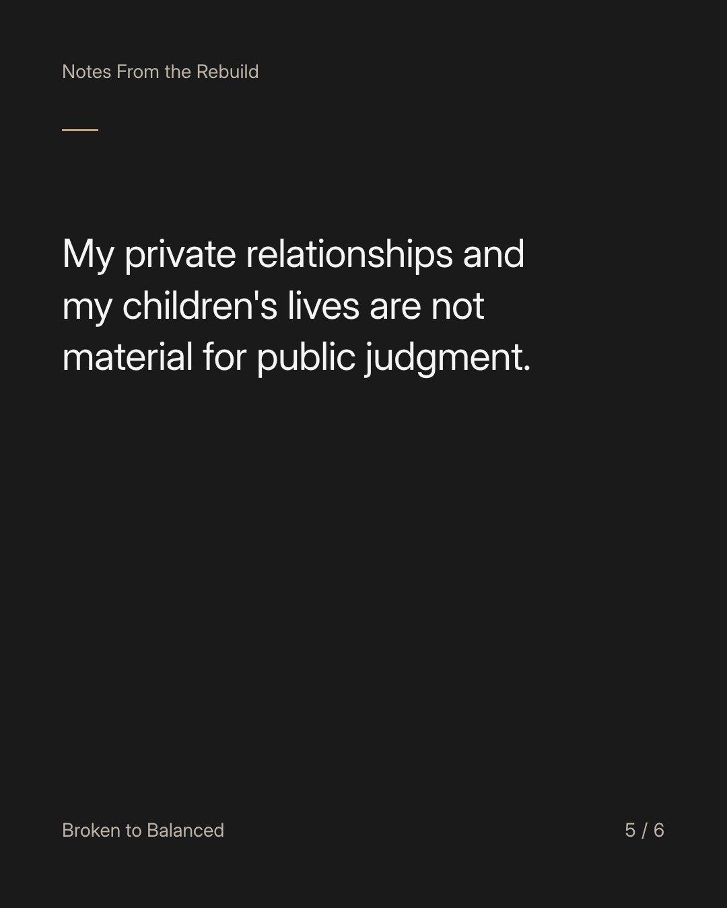
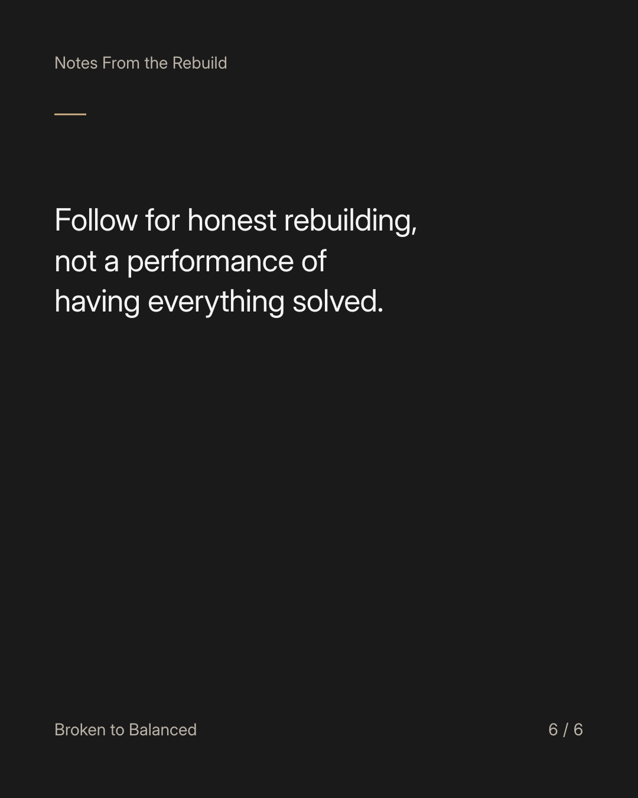

Exact text and accessibility text
I am not building this page from a finished life.
Slide 1 of 6. I am not building this page from a finished life.


Exact text and accessibility text
Separation, parenting responsibilities, and rebuilding are part of the experience behind Broken to Balanced.
Slide 2 of 6. Separation, parenting responsibilities, and rebuilding are part of the experience behind Broken to Balanced.


Exact text and accessibility text
I do not want to turn that experience into a perfect comeback story.
Slide 3 of 6. I do not want to turn that experience into a perfect comeback story.


Exact text and accessibility text
This page will make room for difficult days, practical decisions, and things that are still being worked out.
Slide 4 of 6. This page will make room for difficult days, practical decisions, and things that are still being worked out.


Exact text and accessibility text
My private relationships and my children's lives are not material for public judgment.
Slide 5 of 6. My private relationships and my children's lives are not material for public judgment.


Exact text and accessibility text
Follow for honest rebuilding, not a performance of having everything solved.
Slide 6 of 6. Follow for honest rebuilding, not a performance of having everything solved.
Exact caption
Plain-text fallback: select and copy the caption.